Redstone Computer
Built Oct 05, 2024

Last updated: Mar 17, 2025
The Redstone Computer is an SFF Dell OptiPlex 7020 from 2013 that I got for free and turned into my new daily driver/gaming PC. I primarily play Minecraft and Forza Horizon 4, plus a smattering of other lightweight games like Geometry Dash and Asphalt 8/9. It runs all of those games very smoothly, even with fancy shaders in Minecraft. However, the GPU is not being used to its full potential, because it has severe overheating issues, to the point where it's not very safe to allow it to reach more than 60% utilization, because the cooler is bad and there's like no airflow in the case anyway. But even with that handicap, it still works quite well, and the computer is very stable otherwise. It's also so much faster than my old laptop. That could barely run Minecraft at playable framerates WITHOUT shaders. Geometry Dash was mostly fine on it, but large, extremely detailed levels would still manage to kill that laptop.
I haven't run into any major issues so far, other than the GPU overheating problem I mentioned, and the fact that initially, the Bluetooth on the Wi-Fi card didn't work. I fixed that with a cheap adapter, though, and Bluetooth works now. #adaptersftw
Storage upgrade 1/16/2025
I was starting to run out of space on the internal SSD, so I added a 1TB Western Digital HDD for $38. At this point, I'm probably not going to make any more hardware changes on this computer. The next upgrade will be a whole new PC (or I might buy a laptop, I'm not fully sure yet). I do know that after Windows 10 gets killed by Microsoft, I'd rather deal with the mess that is Linux than the mess that is Windows 11. The thing is, Linux actually shouldn't be too messy for me, especially since I'm using an AMD GPU.
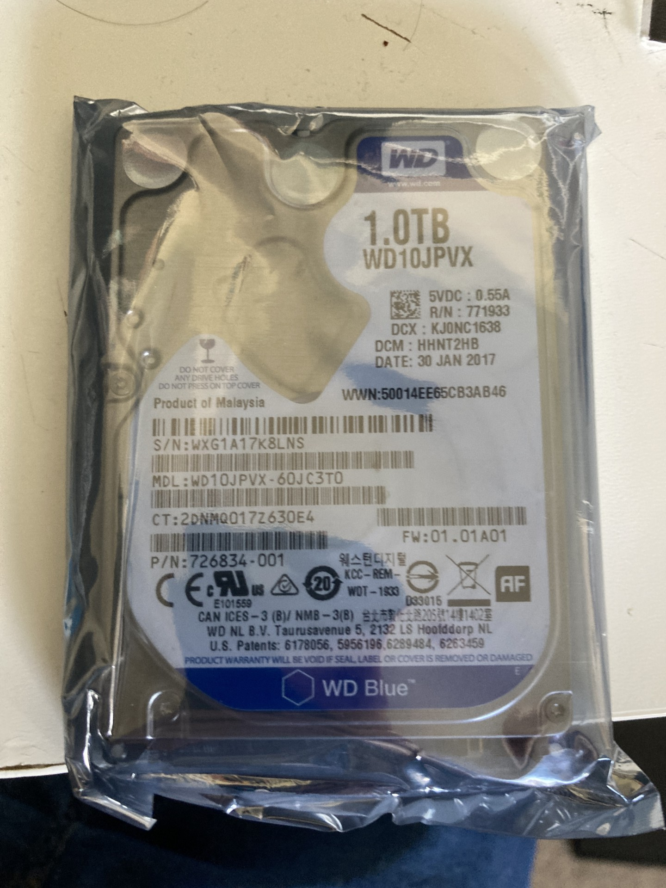
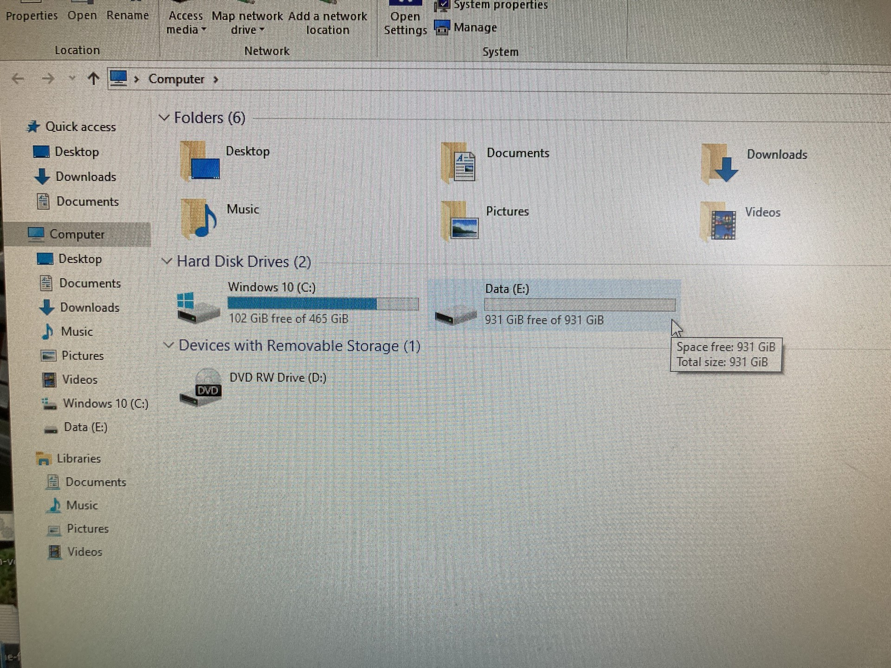
Original build 10/5/2024
This OptiPlex started out with an Intel Core i5-4590, 8 GB of RAM, a 128 GB SSD, and no GPU or Wi-Fi/Bluetooth. Obviously, that won't allow for much gaming, especially since Intel iGPUs of this era are hot garbage. So....
- I upgraded the CPU to an Intel Core i7-4790 (non-K, this mobo can't overclock anyway) for the best possible chance of not bottlenecking the GPU I put in this thing... I didn't have to worry about that, since it's doing a fine job of bottlenecking itself lol.
- I replaced the original RAM with a 16 GB Crucial DDR3 kit, just because Windows and games are quite greedy and demand more RAM than the original 8GB kit would have allowed.
- The original 128GB SSD would have filled up pretty much as soon as I got everything set up, so I replaced that with a Crucial 500GB SSD.
- You can't do much gaming on an Intel iGPU from 2013, so I bought a Radeon RX 6400, but unfortunately I had to settle for the loser XFX version as opposed to the Sapphire Pulse RX 6400, which is better in every possible way. Issues with the XFX card include: 1) A needlessly complicated procedure to swap out the PCIe bracket for the low-profile one, 2) An awful cooler that prefers to let the GPU melt rather than scream its face off with the laughably tiny fan, and 3) complete lockout of frequency, power limit, and fan curve adjustment, which is sad because I wanted to undervolt the card for efficiency's sake, and also see if I could push a more aggressive fan curve so that it runs cooler. It's already quite efficient though, so undervolting likely wouldn't do much.
- Finally, I didn't really want to use Ethernet, plus I wanted Bluetooth for my speaker, so I bought a TP-Link Wi-Fi card with Bluetooth. Initially the Bluetooth didn't work, though, since the Wi-Fi card demands you have a spare USB header on your motherboard. The OptiPlex mobo does not, and even if it did, they're proprietary anyways.
Overall, I think I did pretty good. I actually really like small computers. I do not like building in an SFF (i.e, mini ITX) case though, which is basically what this is. They are pretty cramped. My next desktop will probably be MicroATX. That seems like the best compromise between normal ATX towers (which I think are too big) and exremely compact mini ITX PCs (which are quite compact, but are often a pain to build in).
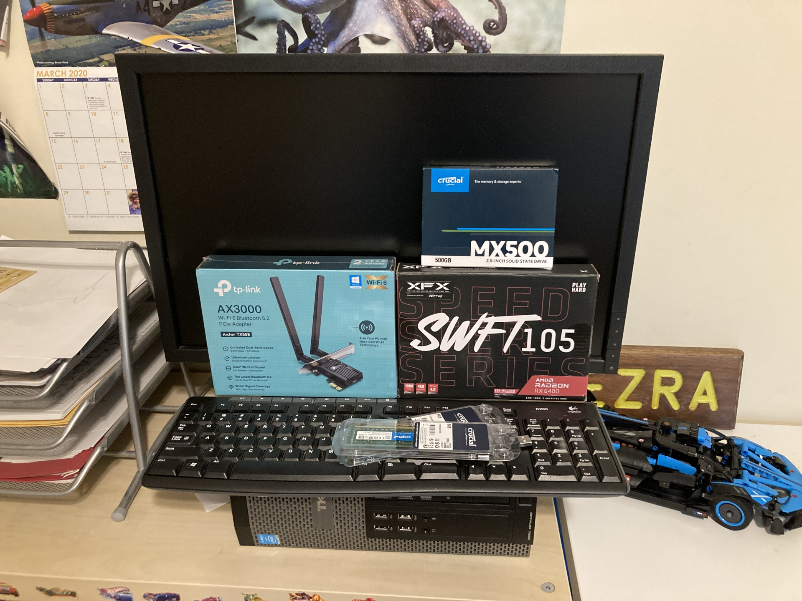
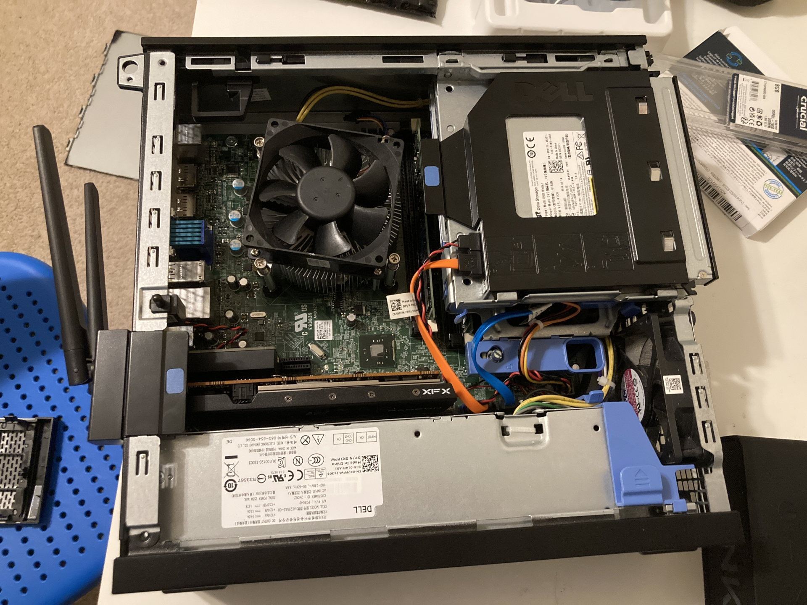
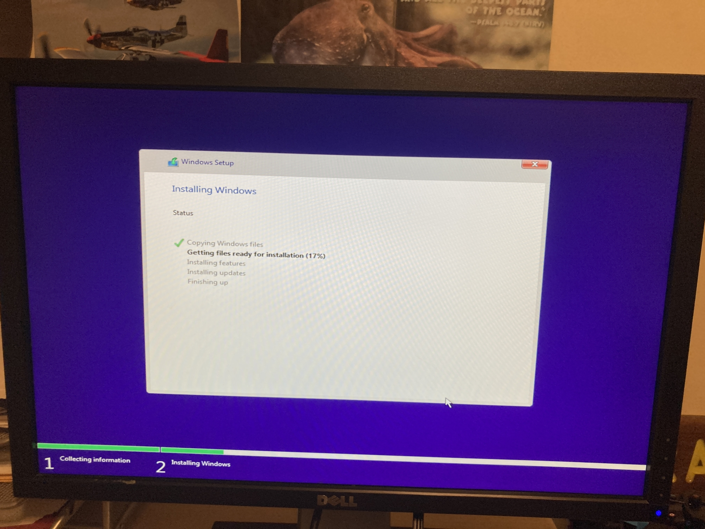
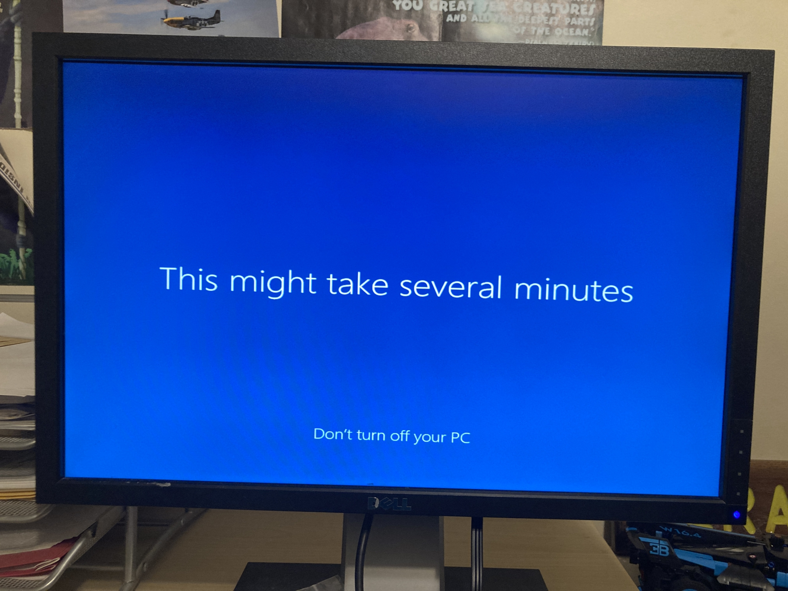
Thoughts on the components
Screenshot dump :)
Here are some screenshots I took in Minecraft with shaders and Forza Horizon 4. Enjoy ;) (I have a lot more screenshots, but I didn't want to put too many on this page since there's already a lot of pictures.)
Minecraft
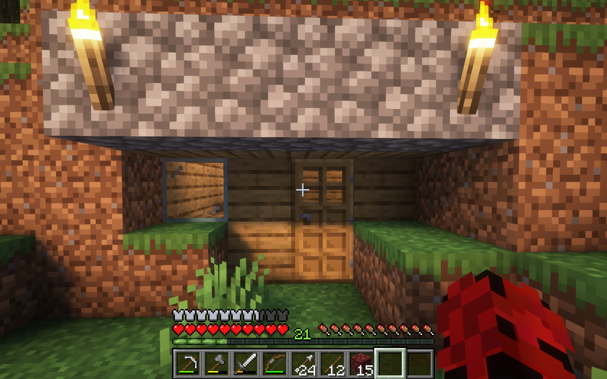
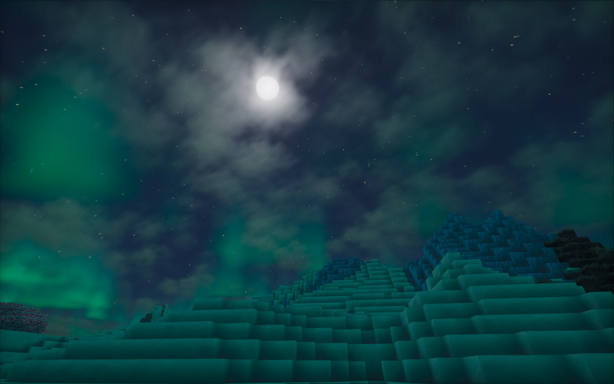
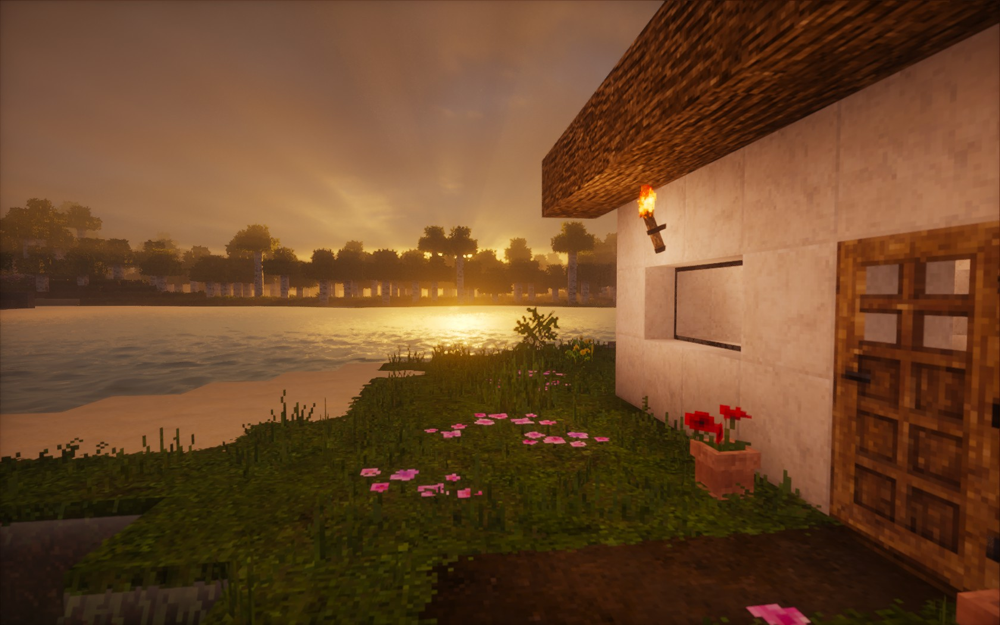
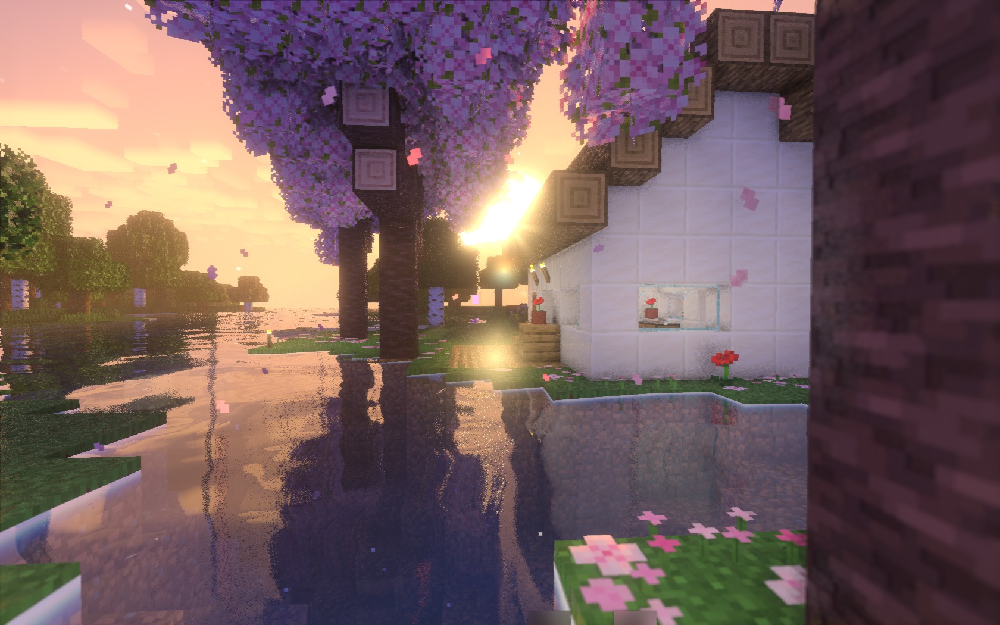
Forza Horizon 4
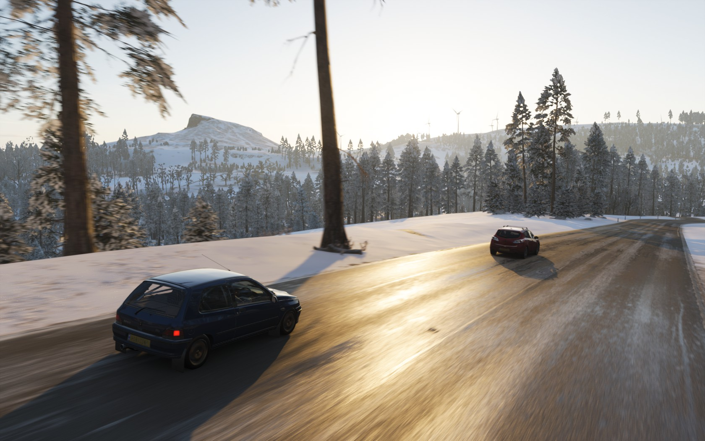
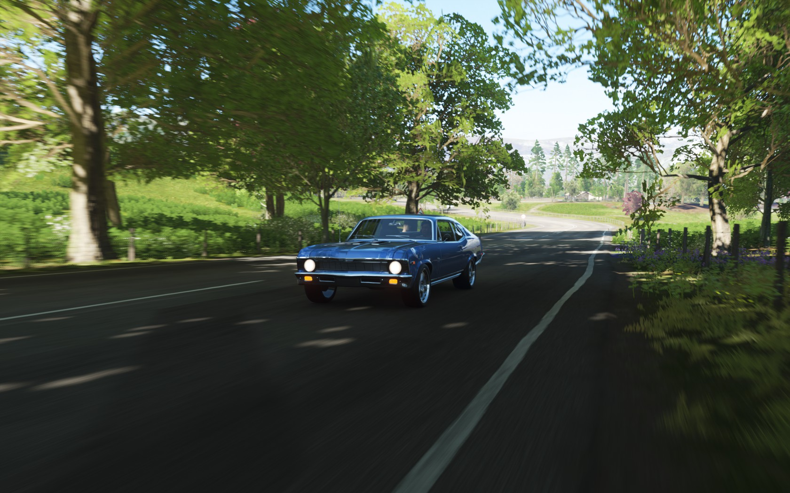
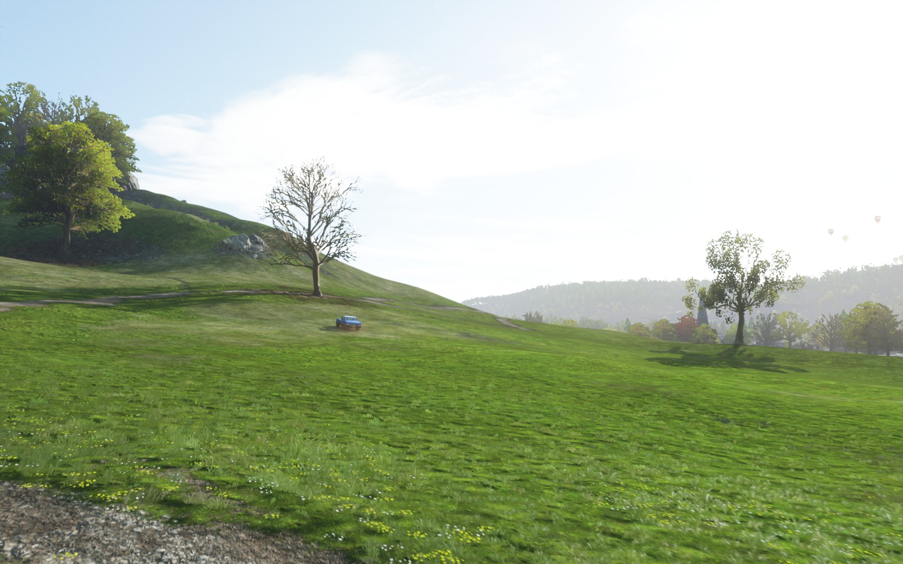
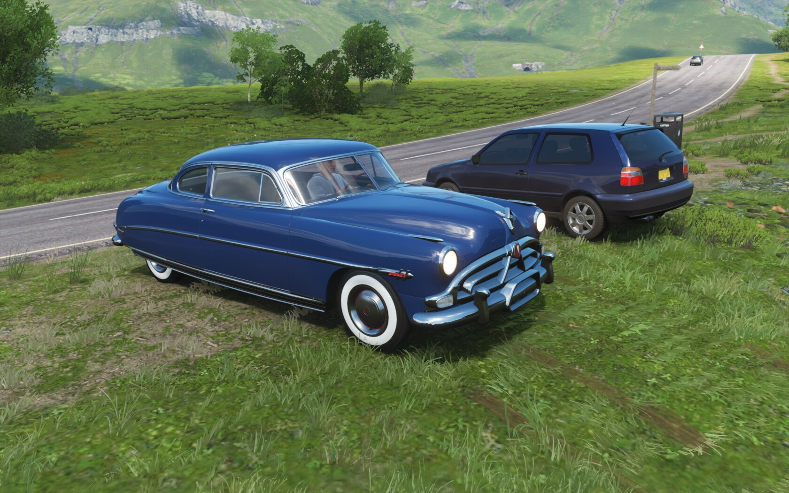